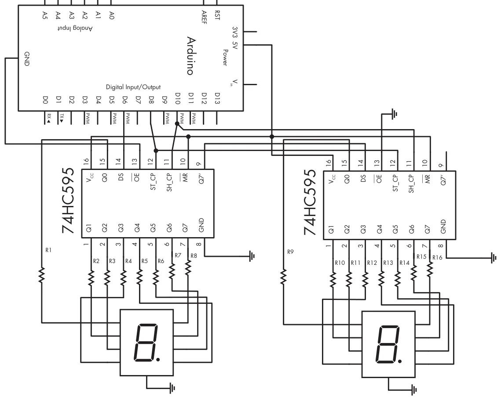

Display Modules
This project will show you how to control two, seven-segment LED display modules so that you can display two-digit numbers.
The Hardware
The following hardware is required:
- Two 74HC595 shift register ICs
- Two common-cathode seven-segment LED displays
- Sixteen 560 Ω resistors (R1 to 16)
- One large breadboard
- Various connecting wires
- Arduino and USB cable
The Schematic
Figure 6-15 shows the schematic for two display modules.

Note that the shift registers’ data and clock pins are connected to each other and then to the Arduino. The data line from Arduino digital pin 6 runs to shift register 1, and then a link from pin 9 of shift register 1 runs to pin 14 of shift register 2.
To display a number between 0 and 99, we’ll need a more complicated sketch. If a number is less than 10, then we can just send the number followed by a 0, as the right digit displays the number and the left digit displays 0. However, if the number is greater than 10, then we need to determine each of the number’s two digits and send each to the shift registers separately. To make this process easier, we’ll use the math function modulo.
Modulo
Modulo is a function that returns the remainder of a division operation. For example, 10 modulo (or mod) 7 equals 3—in other words, the remainder of 10 divided by 7 equals 3. We use the percent sign (%) to represent modulo. The following example uses modulo in a sketch:
int a = 8;
int b = 3;
c = a % b;In this example, the value of c will be 2. So to determine a two-digit number’s right-hand digit, we use the modulo function, which returns the remainder when dividing the two numbers.
To automate displaying a single- or double-digit number, we’ll create the function displayNumber() for our sketch. We use modulo as part of this function to separate the digits of a two-digit number. For example, to display the number 23, we first isolate the left-hand digit by dividing 23 by 10, which equals 2 (and a fraction that we can ignore). To isolate the right-hand digit, we perform 23 modulo 10, which equals 3.
// Project 19 - Controlling Two Seven-Segment LED Display Modules
// set up the array with the segments for 0 to 9, A to F (from Table 6-2)
int digits[] = {252, 96, 218, 242, 102, 182, 190, 224, 254, 246, 238, 62, 156,
122, 158, 142};
void displayNumber(int n)
{
int left, right=0;
❶ if (n < 10)
{
digitalWrite(LATCH, LOW);
shiftOut(DATA, CLOCK, LSBFIRST, digits[n]);
shiftOut(DATA, CLOCK, LSBFIRST, 0);
digitalWrite(LATCH, HIGH);
}
else if (n >= 10)
{
❷ right = n % 10; // remainder of dividing the number to display by 10
left = n / 10; // quotient of dividing the number to display by 10
digitalWrite(LATCH, LOW);
shiftOut(DATA, CLOCK, LSBFIRST, digits[right]);
shiftOut(DATA, CLOCK, LSBFIRST, digits[left]);
digitalWrite(LATCH, HIGH);
}
}
❸ void loop()
{
int i;
for ( i = 0 ; i < 100 ; i++ )
{
displayNumber(i);
delay(100);
}
}At ❶, the function checks to see if the number to be displayed is less than 10. If so, it sends the data for the number and a blank digit to the shift registers. However, if the number is greater than 10, then the function uses modulo and division at ❷ to separate the digits and then sends them to the shift registers separately. Finally, in void loop() at ❸ we set up and call the function to display the numbers from 0 to 99.